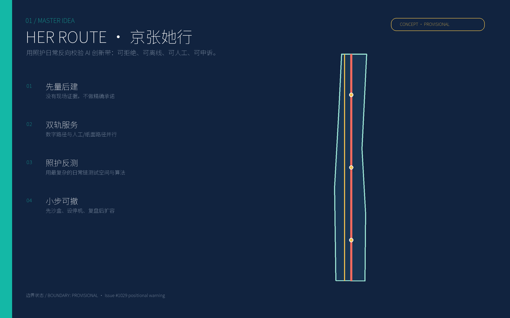
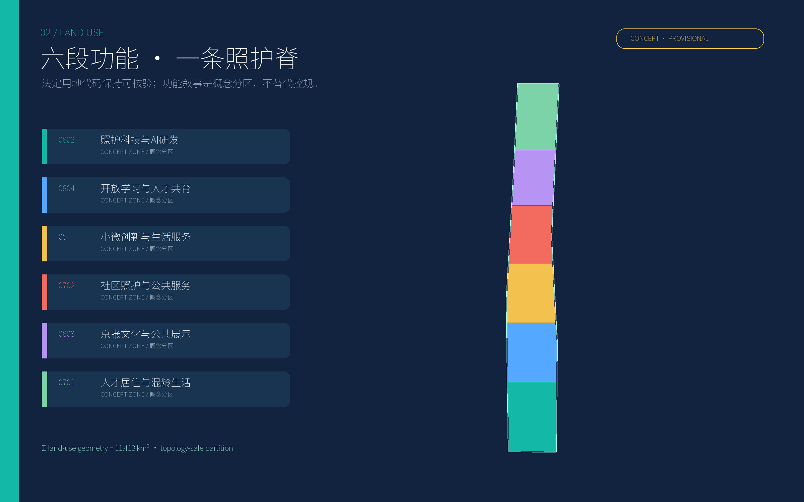
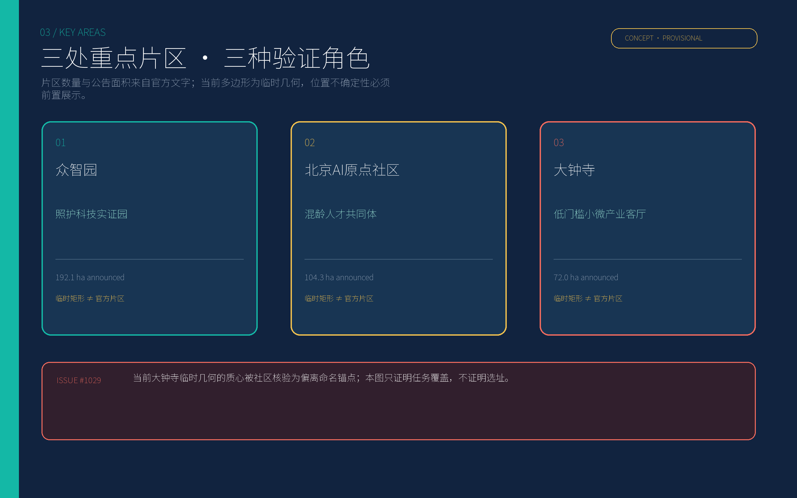
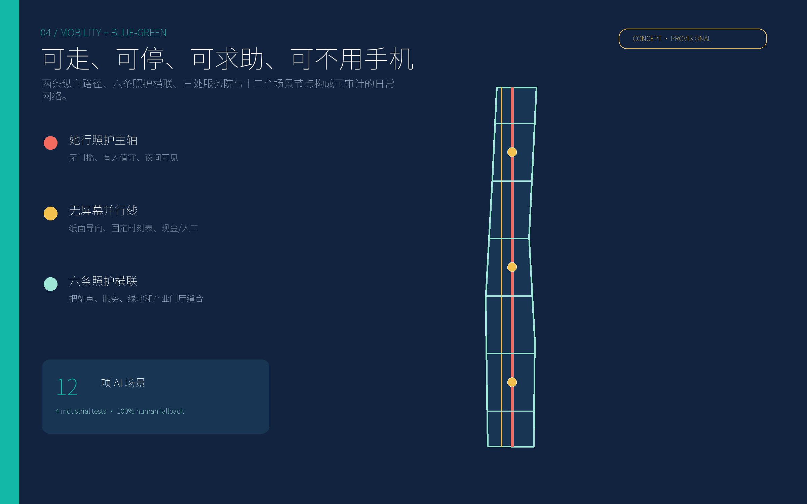
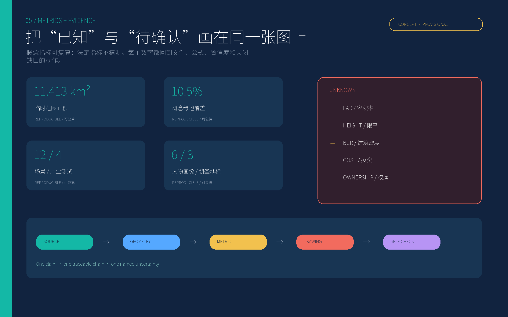

11.413 km²
临时范围面积
一份照护优先、性别回应的城市设计方案。它不承诺无所不能的城市大脑，而是用最复杂的日常行程检验每项 AI 与空间投资。
临时范围面积
概念绿地比
概念公共空间比
项 AI 场景
项产业验证场景
类现场审计人物画像
处 AI 朝圣地标
边界警告：当前总体与重点片区多边形均为临时几何；仓库 Issue #1029 已指出显著位置不一致。
总览地图 · 三层范围 · 重点区域 · 用地分区 · 交通慢行 · 蓝绿公共空间 · 建筑 · 更新项目 · AI 场景 · 核心指标 · 任务覆盖 · 自检状态 · 来源 · 假设
validator compatibility: 总览地图 · 三层范围 · 重点区域 · 用地分区 · 交通慢行 · 蓝绿公共空间 · 建筑 · 更新项目 · AI 场景 · 核心指标 · 任务覆盖 · 自检状态 · 来源 · 假设




